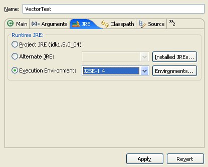
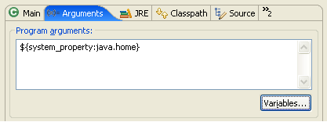
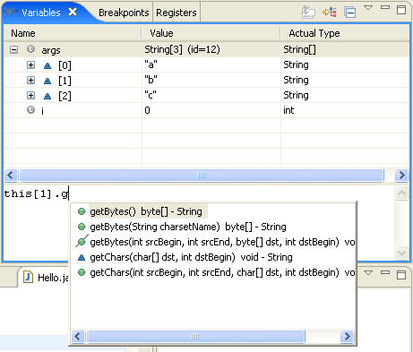
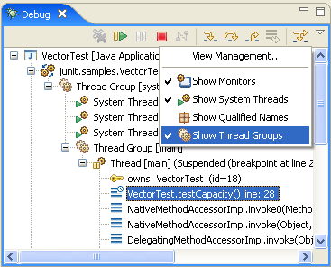
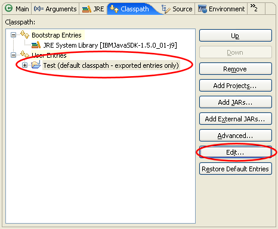
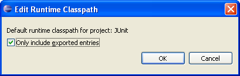
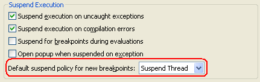

Introduce Indirection refactoring
Introduce Indirection is a new refactoring that lets you redirect all callers of a method to a new method. The new method calls the original one. You can replace the default implementation of the new method by any other if you like.
Such an indirection is useful when new behavior needs to be introduced to a method but:
- The method cannot be changed because it is from a library.
- The method must not be changed because it is an API method.
Use the indirection for bug fixes to the original method or as a quick way to add code before or after all calls to a method.
To execute the Introduce Indirection refactoring select a method, invoke Refactor > Introduce Indirection..., provide a name and the declaring class for the new method.

The method is added to the selected declaring class.

And all references are updated to call the new method.

Extract Superclass refactoring
A new refactoring called Extract Superclass extracts a common superclass from a set of sibling types. The selected sibling types become direct subclasses of the extracted superclass after applying the refactoring. Moreover, Extract Superclass allows to use the extracted superclass wherever possible in the code.
JavaEditorTests and PropertiesEditorTests
are the sibling types in the following example. The first picture shows
the type hierarchy before the refactoring.

The next picture shows the type hierarchy after extracting EditorTests
with the Extract Superclass refactoring.

To invoke this refactoring, use Refactor > Extract Superclass....
Clean Up wizard
Clean Up can be invoked on any number of Java source files, packages or on a whole Java project. It helps to:
- fixing multiple problems at once
- bring code to use a preferred code style
Here are some examples what can be done:
- force curly brackets (blocks) to be used for every 'if', 'while' or 'for' body
- qualify all field accesses with 'this'
- use 'final' where possible
To bring Java 1.4 compatible code to 5.0 use Clean Up to:
- convert all
forloops to enhancedforloops where possible - mark all overriding methods with
@Overrideannotations

Select a project, package, or file and use Source > Clean Up... to start this wizard.
Refactoring history
Most of the refactorings offered by JDT are now tracked in a Refactoring History. The refactoring infrastructure
stores detailed information about refactorings which have been performed on your workspace.
The refactoring history can be browsed and edited using Refactor > History...

Create and apply refactoring scripts
Refactorings performed on your local workspace can now be exported into a Refactoring Script and replayed on an arbitrary workspace.
Such refactoring scripts can be used in different scenarios such as automatic fixing of breaking API changes between software layers or providing patches with rich semantics.
Create a refactoring script from the refactoring history using Refactor > Create Script...

To apply the generated refactoring script on an arbitrary workspace use Refactor > Apply Script...
A new extension point allows plug-in writers to contribute refactoring scripting support for new or already existing refactorings.
See the org.eclipse.ltk.core.refactoring.refactoringContributions
extension point for details.
JAR file export with refactorings
When exporting a JAR file from the workspace, the JAR Export Wizard offers the option
to include refactoring information into the JAR file.
Use File > Export... and select JAR file. On the first page of the JAR Export Wizard, select
Export refactorings for checked projects. Click on the link to select the refactorings to include.

Clients are then able to migrate an old version of the JAR file to a new one using the Refactor > Migrate JAR File... refactoring. Alternatively, you can also use Build Path > Migrate JAR File... if a JAR file is currently selected.

This refactoring automatically updates all code which is dependent on the old version of the JAR file to use the new version of the JAR file.
API aware refactorings
There are a number of existing refactorings which have been extended to support API compatibility by keeping the original member as a delegate to the refactored member:
- Rename Method
- Rename Field (for constants only)
- Move Method
- Introduce Parameter
- Change Signature

The generation of a delegate member to preserve API compatibility can be enabled by checking Keep original method as delegate to renamed method in the refactoring dialog.
Rename Type updates similarly named elements
The Rename Type refactoring can now rename variables and methods with names similar to the renamed type. This feature helps to keep method and variable names synchronized with type names.

To invoke this refactoring, select a type and use Refactor > Rename...
Rename Package refactoring renames subpackages
The Rename Package refactoring does now also rename subpackages on request.

In this example, junit.samples.money is renamed to junit.examples.money.
To invoke this refactoring, select a package and use Refactor > Rename...
Filter the refactoring preview
The refactoring preview page now supports filtering of changes. This is especially helpful when updating textual matches in comments and strings is requested while renaming Java elements.

The screen shot shows the rename dialog filtered for textual matches
while renaming the class TestCase to TestCasee.
Changes related to the visibility of Java elements can now be filtered as well.
Customizable content assist
Repeatedly invoking content assist (Ctrl+Space on most platforms) now cycles through different proposal categories.
You can assign separate key shortcuts to your favorite proposal categories
and use the
 Java > Editor > Content Assist > Advanced preference page
to configure which categories are shown in the default content assist popup.
Java > Editor > Content Assist > Advanced preference page
to configure which categories are shown in the default content assist popup.

The new org.eclipse.jdt.ui.javaCompletionProposalComputer extension point allows plug-in writers to contribute completion
proposals and categories to the content assist process of the Java editor.
Camel case support in code completion
Code completion now supports camel case patterns.
For example, completing on NPE will propose NullPointerException.
This support can be disabled using the Show camel case matches preference on the
Java > Editor > Content Assist preference page.

Quick menu to surround code
The new Surround With quick menu allows to surround a selection of lines with code. The menu is extendable with custom templates. The templates are now aware of variables that need to be pulled out or made final.

Use Source > Surround With or press Alt+Shift+Z to directly see the menu.
You can add your custom templates on the Java > Editor >
Templates preference page. All the template needs is a ${line_selection}
variable.
New quick fixes
Several new quick fixes have been added, for example:
-
fix raw type accesses

The quick fix gleans information from usages within the same file. For a more sophisticated analysis, use the Infer Generic Type Arguments refactoring.
-
add missing annotation attribute

-
add a new annotation member

Category support
Categories can be defined in Javadoc comments for types, methods, and fields using
the @category tag.

Categories are shown in the Outline and Members views and in the Quick Outline. The view menu allows to select the visible categories.

All members can be folded
When folding is enabled, fields, initializers and their comments can now be folded away the same way as methods.

There are new text folding commands for collapsing all comments, collapsing all members, and resetting the folding structure. These commands are found on the Java editor's Folding context menu on the vertical ruler.
Ruler support and outline for Java files outside workspace
The Java editor now shows vertical rulers and the Outline page as well as the Quick Outline are able to show the outline for external Java files and Java files from repositories.

Java SE 6.0 compliance
The Java SE 6.0 compliance is now fully supported.
In particular, StackMapTable attributes (see JSR
202) are now generated in .class files with a 1.6 target.

Null reference analysis
The Java compiler is now capable to perform basic null reference analysis for local variables.
This optional diagnosis can be enabled on the
Java > Compiler > Errors/Warnings preference page using the
Potential programming problems > Null reference preference.

Note that the analysis is fairly conservative, aligned on definite assignment rules. It only considers cases where there is something suspicious (e.g., if later on a null check is performed), rather than complaining on all possible cases.
In 5.0 compliance mode, null reference warnings can be silenced using
@SuppressWarnings("null").
Improved syntax recovery
The internal Java parser is now much more resilient to syntax errors. In Eclipse 3.1, a syntax error would prevent subsequent errors from being displayed. The parser can now recover from statements with errors and go on to perform further analyzes.
In the following example, the invalid reference to method bar()
is detected despite the missing semicolon in the previous statement.

This for example allows refactorings that only affect a single file to tolerate syntax errors. For instance, it is now possible to rename or extract a local variable at the top of a method that has not yet been written completely.

Treat configurable errors as non fatal
The option Treat configurable errors as fatal errors on the
Java > Compiler > Building preference page
controls if a configurable
error is intended to be fatal or not. This option is enabled by default.
If this option is disabled, then the compiled code can be executed despite the fact that errors exist in the code.
Detection of unnecessary $NON-NLS$ tags
Unnecessary $NON-NLS$ tags are now detected.
A problem is reported if a line comment starts with //$NON-NLS-x$
and no corresponding string exists on the same line.
The reporting can be turned on and off using the same preference as
for the detection of non-externalized Strings. It can be set on the
Java > Compiler > Errors/Warnings preference page
using the Code Style > Non-externalized strings (missing/unused $NON-NLS tags) preference.

To remove the unnecessary tags use Quick Fix (Ctrl+1), or Ctrl+1, Ctrl+Enter to remove all unnecessary tags within a compilation unit.
Detection of raw type usage
Usages of raw types are now detected. A raw type is
a reference to some generic type without any type argument (e.g. List
in place of List<Element>).
This optional diagnosis can be enabled independently from unchecked
type operations on the
Java > Compiler > Errors/Warnings preference page
using the Generic types > Usage of a raw type preference.

This warning can be silenced by adding @SuppressWarnings("unchecked").
Also a Quick Fix has been implemented to help resolving the raw type usage problem.
Detection of method parameter assignments
Assigning to method parameters is considered poor practice.
To detect and report such assignments, open the
Java > Compiler > Errors/Warnings preference page
and enable the Code style > Parameter assignment preference.

Detection of unused labels
The Java compiler now detects unused statement labels.
This optional diagnosis can be enabled on the
Java > Compiler > Errors/Warnings preference page
using the Unnecessary code > Unused break/continue label preference.

Detection of switch case fall through
The Java compiler can now detect if a case may be entered by falling through a previous case. Empty cases are allowed.
This optional diagnosis can be enabled on the
Java > Compiler > Errors/Warnings preference page
using the Potential programming problems > Switch case fall through preference.

A quick fix to add a break statement to the previous
case has been implemented.
Improved performance for large .jar files
The size limit of the internal Java model cache is now a function of the max heap size (-Xmx VM argument on most JVMs) given to the Java Virtual Machine running the Eclipse IDE.
Raising the heap size has a noticeable performance improvement when there are large .jar files on the build classpath.
Recreating modified .class files
The Java builder can now recreate modified or removed .class files in the output folder using the original source.
This can be controlled on the
Java > Compiler > Building preference page
using the Output folder > Rebuild class files modified by others preference.
Javadoc view and tool tips from attached Javadoc
The Javadoc view and the Javadoc hovers now extract the information from the attached Javadoc for libraries that do not have source attached.
JUnit 4 support
The JUnit support has been updated to run and write JUnit 4 tests. Check out www.junit.org for more about JUnit 4.
- use the New JUnit Test Case wizard to generate a JUnit 4 test class:

- use the provided JUnit library to add to the build path

- launch JUnit 4 tests as usual with Run As JUnit
- ignore tests by tagging them with
@Ignore
JUnit view history
The JUnit view can now handle multiple concurrent test runs. You can switch between active and recent test runs using the new history. Tests can be rerun from the history without stopping already running tests.

This works with JUnit 3 as well as with JUnit 4.
An execution environment describes the capabilities
of a runtime - for example, J2SE-1.4. You can specify JREs used for
running, debugging and building based by referencing an execution environment.
The new
Java > Installed JREs > Execution Environments preference page
displays
the JREs installed in your workspace compatible with each execution
environment. JREs that meet the exact requirements of an execution environment
are displayed in bold, and JREs that surpass the requirements of an
environment are displayed in the default font. When more than one JRE
is compatible with an execution environment, you can select a default
JRE to use for that environment by checking it.

A build path or launch configuration referencing an execution environment is more portable than one referencing an explicit JRE as a JRE's execution environment can be resolved independent of its name. Use the JRE tab or Edit Library wizard to specify an execution environment for running and building.

System property launch variable
A new launch variable allows to dynamically specify system properties as Java program and VM arguments from the Eclipse runtime. The variable accepts a single argument which is the name of the system property to be resolved at launch time.
For example, the java.home system property would be referenced with ${system_property:java.home}.

Evaluation support for arrays
Evaluation and content assist are now supported for
Java arrays. Use this to refer to the selected array.

Java thread groups
You can now display thread groups in the Debug View by toggling Show Thread Groups in the view menu.

Runtime classpath exported entries
A runtime classpath can be configured to include only exported entries from the build path. By default, a runtime classpath includes all entries (exported and non-exported).
From the Classpath tab select the default entry and use the Edit... button to configure the option.


Suspend Thread versus Suspend VM
An option has been added to the
Java > Debug preference page
to control whether newly-created breakpoints suspend
a single thread or the entire VM.

Java type indicator
Enable the Java Type Indicator on the
General > Appearance > Label Decoration preference page to find
out what the first type in a compilation unit or class file is.
An adornment is shown for interfaces, annotations, and enums, while an ordinary class stays undecorated.

Find broken externalized strings
A new action can search for broken externalized strings. The search reports missing, unused and duplicate keys.

To start the search select a properties file, a package, or a whole project and use Source > Find Broken Externalized Strings
Improved support for Eclipse's string externalization mechanism
The Eclipse string externalization mechanism has now the same kind of support as traditional string externalization. The associated externalized value is shown in a hover, when you linger over a key for an externalized string in the Java editor.

Ctrl+Click on the key to navigate directly to the entry in the corresponding properties file. In the properties file editor you can use Ctrl+Click to find out where the key is used in the code.
Create a type from an example snippet
package pack;
public class HelloWorld {
public static void main(String[] args) {
System.out.println("Hello World");
}
}
then select a source folder in the Package Explorer use Ctrl+V (Edit > Paste).
This automatically creates a new package 'pack' and file 'HelloWorld.java' with the copied content.
Generate hashCode() and equals()
A new action can be used to generate the methods
hashCode() and equals(). You can select the
fields on which the implementation should be based.

To invoke this action select a type and use Source > Generate hashCode() and equals()...
Command line code formatter
It is now possible to format source code without starting the Eclipse UI using the new headless formatter application. The command line formatter works as a standard Eclipse application.
The following command will format the source files in the folder src with the options specified in the config.prefs file:
eclipse -application org.eclipse.jdt.core.JavaCodeFormatter
-config d:/config.prefs c:/src
See Using the Formatter Application for details.
Support for Java-like extensions
Files with a file extension other than .java
and containing pure Java code are now supported. A Java-like extension
can be added using the
General > Content Types preference page (type Text > Java Source File).